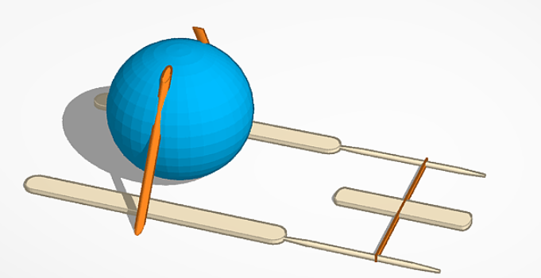

Sara's website
.jpeg)
8/25/23 - We studied how to utilize AWS Cloud 9 during the first week of class to start the process of learning and comprehending how to add various things to our websites. Our first challenge of the day required us to link poles and guid a marble towards a bucket.
9/11/23 - We started to learn how to use Tinkercad, a website that helps us bring our ideas to life by making a 3-d representation of the object. Our first project was the Rube Goldberg project were we had to incorporate different simple machines.

9/20/23 - Today, we successfully finished our Rube Goldberg project however, we did have to change a few things from our prototype. For instance, the three legs at the edge of the project did not truley support their side therefore, we taped two of the legs to the lever. We also had to add supports for the second ramp or else the whole project would have collapsed. After adding all of the minor details, we tested it out for the first time with the balloon and to our suprise, it worked!
9/29/23 - Last class we dissected a computer to learn about the different parts. Moreover, we learned about what each parts purpose is and and got to take the computer apart and put it back together. Unfortunetly, after we tried putting the computer back together, we couldn't get it to work. However, we were able to identify each part of the computer as we took it apart.

10/6/23 - After learning about the field, bioengineering, we had to try and attempt to make our own prosthetic hand with cardboard, string, rubber bands, and tape. The assignment was to make the hand well enough to pick up a water bottle. Our approach was a more simple one; we cut out fingers and attached strings and rubber bands so it could be easy to close the hand. Therefore, we tried our best and we could only pick up the water bottle for a few second without dropping it.
10/20/23 - Following our lesson of aerospace engineering, we had a project which required us to create a rocket out of a 2 liter soda bottle, cardboard, and paper. We did approach the design with a more basic look; we used the cardboard to make 3 fins, and made a paper cone for the top. Moreover, we wanted to make our design with lighter materials therefore it wouldn't mess with the action of launching the rocket. When launching the rocket, I would say that it was a success because it did launch successfully; yes, it did kind of spin out of control however, it did launch at a decent height.
10/26/23 - Moving onto our next lesson, environment engineering, our project was to build a filter system that would change dirt water into clear water. During this project, the materials that we were open to use was rocks, pebbles, cotton balls, and sand. The order in which we use the materials was cotton balls on the bottom, then sand (but not too much), then rocks, then pebbles. After creating the filter, we dumped in the dirty water and altogether it took a long time for some of the water to come back out. The water that did come out of our filter system was a lot more cleaner than the dirt water that we started with. With the more clean water, but not so clean, we put it back into the filter system to see if the water could come out a bit more cleaner to try and get the water to be crystal clear. However, to our disappointment, the water stayed the not-so-clear water, like the first time when the water came out of the system.
11/3/23 - After our lesson on environmental engineering, we started to talk about electrical engineering. To further understand our lesson about electrical engineering, we did two labs in tinkercad and used objects like the breadboard, resistor, and LEDs. In these labs we had different circumstances in which we had to turn on the LED, or in some cases LEDs.


11/13/23 - Following our project of trying to turn on the LED through using tinkercad, we used our knowledge from those projects to create our own. Using actual wires, LEDs, breadboard, and resistors, we recreated the projects that we did using tinkercad. After recreating those projects, we took a step forward and connected it to our laptops to try and code the LED to blink. Thereafter we used the computer to code the LEDs to blink with a certain power, messing with how long it blinks or doesn't blink. Moving forward we also figured out how to code to make the LED fade instead of blink.
11/17/23 - Moving on, we started our projects about Buisness Engineering. For this project, we had to form groups and come up with ideas for a business product and, just like Shark Tank, come up with a business pitch to present to the class. Considering that our group had no idea what product to present, we started to think of issues that we can resolve with a product. Furthermore, that's where we came up with the product AFG (Anti-Fog Glasses). People who wear glasses often run into the problem that their glasses constantly fog up; therefore, we came up with a product that would take away the fog and moreover feel more comfotable with wearing glasses.

12/19/23
1/12/24 - Our next and final unit was on chemical engineering! The project for this unit was to make oobleck, a non-Newtonian fluid that acts like both a solid and a liquid; however, we were not told the perfect ratio to make oobleck therefore we had to guess. We had started by pouring all the cornstarch into the tray and adding the water little by little. After some time we had come to the perfect ratio of water and cornstarch which therefore turned into oobleck.
1/29/24 - After learning about the different branches of engineering, we have moved onto projects that consist of the different branches that we had learned the semster before. Our current project either a mousetrap car or and arduino car; the mousetrap car cover mechanical engineeering while the arduino car covers electrical engineering. My group decided to make the mousetrap; moreover we decided to start the project proposal. In the project proposal we did our research on what materials to use and what materials will help our car go a farther distance. In the end we found out that by attatching rubber bands to the exterior of the wheels, it will add traction which will make the car move faster. After the project proposal, we used Tinker CAD to design our car; this also helped us visualize our measurements to make sure that everything will fit perfectly. Following making our design of our car, we will start to build our car and bring it to life.

2/14/24 - While building the car we ran into some problems. First, we realized that one set of the wheels was not attached to the body of the car other than the string, which was not going to work. We decided to attach a skewer from the body to the wooden rod, however we were met with another problem. If the wooden rod was attached to the body of the car, then the string would not do it's job and make the car move. Therefore, because the wooden rod was too thick to add a straw, we decided to make a triangular shape, giving the wooden rod the space that it needs to make the car move. Moreover, we thought that we were ready to test our car however, the car did not agree. After we wrapped the string around the wooden rod, the car failed to move; We believed that it was due to the carboard piece, that was in the center of the wooden rod keeping the wheel and the body connected. Because of the carboard, we had to put the string onto one side; When we tested it, the wheels flipped over because of how the string was wrapped around one side. Therefore we decided to wrap it on both sides over the carboard piece however that made the car not move at all. Even though it didn't move at all, it was expected to move 348 due to our calculations. After coming to the decision that car will not move, we decided to take our mistakes, learn from them, and apply that towards the next iteration.

2/26/24 - After finishing this project, my group and I are very happy with the outcome. Starting out this project we decided to use the bigger wooden rods and disconnect one set of the wheels; however, these are some of the few things that made our first interpretation fail. For the first interpretation of the project we had designed the car to have one set of the wheels to be separated from the body; but we didn't figure out how to connect the wheels. Therefore, we decided to attach a wooden stick from the center of the body to the center of the axle; Moreover, we didn't think of how the wheels were going to spin, and we added a cardboard piece. The wooden stick would now be attached to the cardboard piece, which would surround the axle; despite that, the wheels would not spin when we winded up the string, which was linked to our second problem, the axle. We had used wooden rods to connect the CD's together but, we didn't have any supplies that would surround the thick wooden rod the way a straw would surround a skewer. Therefore, we had to use a cardboard piece to try and replicate a straw which did not turn out in our favor. In our second iteration we fixed both problems; we connected both sets of wheels to the body of the car and used skewers instead of the thick wooden rods. We glued straws to the bottom of the car and put the skewers through it; that way we wouldn't have to poke holes in our car and, the axle would have more freedom to spin. Moreover, we also used fishline instead of the thick string, that way we can wind it up more and it could travel a longer distance. In the end, our car went from traveling 0 feet, in the first iteration, to 55 feet, in the second iteration.
2/28/24 - Once we completed our mousetrap car project, we moved onto our next project, egg drop. Within this project we will have to come up with a design that can protect an egg is we were to drop it off a 3-story building. After doing some reesearch, we found one repeating design that worked for a lot of people. The design looked more like a spike ball; we would surround the egg with straws that way when it hit the floor, the first thing that would come into contact is the straw instead of the egg. Moreover, we wanted to add a parachute so we decided to add a trash bag to the top to cushion the fall. Following our research, we made a CAD of our design.
3/6/24 - After finishing our egg drop design on CAD, we moved onto actually making the design. Once we started making the desgin with the straws, we decided that the straws would not be able to hold the egg without cracking. Therefore, we decided to start from scratch and go with a more simple design. We put the egg in a small box and filled the box with cotton balls to cushin the fall. Moreover, we also added a parachute to hopefully help the egg fall more slowly. In the end, our egg did survive the 3-story building drop!
3/29/24 - Before we start our final, which is creating a big boat, our next project is to create a gutter boat. The most difficulty with this project was the limited supplies, therefore it was difficult to try and find a desgin that would work with our limited supply. However, I found a design that perfectly fit our supply. This design did not have a sail but would have a rubber motor, because we believe that blowing on a sail would have the boat moving slower rather than a rubber motor. After finding our design, we motified some of the supplies that way we can be able to use the design. After which, we created our CAD!
4/3/24 - After creating our gutter boat, we decided to test it out! However to our disappointment, the boat barely traveled any distance. After realizing that our design did not work, we decided to recreate it with a few adjustments. We made the tail paddle smaller that way it wouldn't hit the botton of the gutter, and we switched the two toothpicks with two halves of a popsicle stick. However, once again, our gutter boat did not work and it barely traveled any distance. Furthermore, we discovered that a rubber motor could not cover a longer distance than a sail.
4/11/24 - Before our final project we were presented with an challenge. This challenge consisted of running with a water balloon and make sure that it does not pop. However, the only materials that we can use are rubber bands, popsicle sticks, and a meter stick. Moreover, we are only able to hold the meter stick on the opposite side of the balloon therefore restricting us from holding the balloon the reasure that it does not pop. Our idea for this challenge was the use that popsicle sticks to trap the balloon onto the meter stick with the help of the rubber bands. After making our version we were scared that it wouldn't hold the balloon the right way and that it would not suport the balloon. However, we held out hope that it would work. Unfortunetly, we were disappointed when the ballon sliped out of our project and popped right as the race started.
4/15/24 - Once we were finished with the our smaller projects, we moved onto our final. For our final, we have to create a cardboard boat that will support two people and have them travel across the CV pool and back. The trick is, we are allowed to use as much cardboard as we need but we only have one roll of duct tape. Before creating our design we had to complete an analysis for our boat. Within the analysis we conducted research to find a cardboard boat design that can support two people, calculate if the boat would support two people and see if the duct tape would be enough to hold the boat together, and explanations which explain our process through the research. Once we were done with the boat analysis, we moved onto creating our boat design in Tinker CAD.
4/19/24 - As we were in the process of making our boat, we added many changes like changing the entire design of the boat. While making our boat, we realized that the boat would become huge and we wanted to see if we could make that boat a bit more compact. Instead of making the boat 5ft by 6ft, we cut down the measurements therefore making it smaller than our original measurements. As we cut down the measurements for the whole boat, this also changed out measurements for the tape. We had originally made measurements that we would have a lot of extra tape, however with the design change, we ended up running out of tape. Therefore, we were not able to fully tape the bottom. Throughout making the boat we realized that we should have stuck to the original design which could have possibly worked better than what we ended up with. Moreover, we should have rerun the calculations to make sure that the boat would float and that we would have had enough tape.
5/29/24 - Our boat did not make it through the race. After changing the dimensions of our boat, it was to be expected that it would not float. The second that one person went inside the boat, it was clear that two people would not fit inside the boat. Moreover, the tape gave out, as expected, and water started to seep in from the corners of where the tape was supposed to protect. However, the boat did hold on longer than we believed it would have stayed together, and made it closer to the end of the pool than where it had started. In the end, our boat did fail as we expected but it did work out longer than we had originally hypothesized.